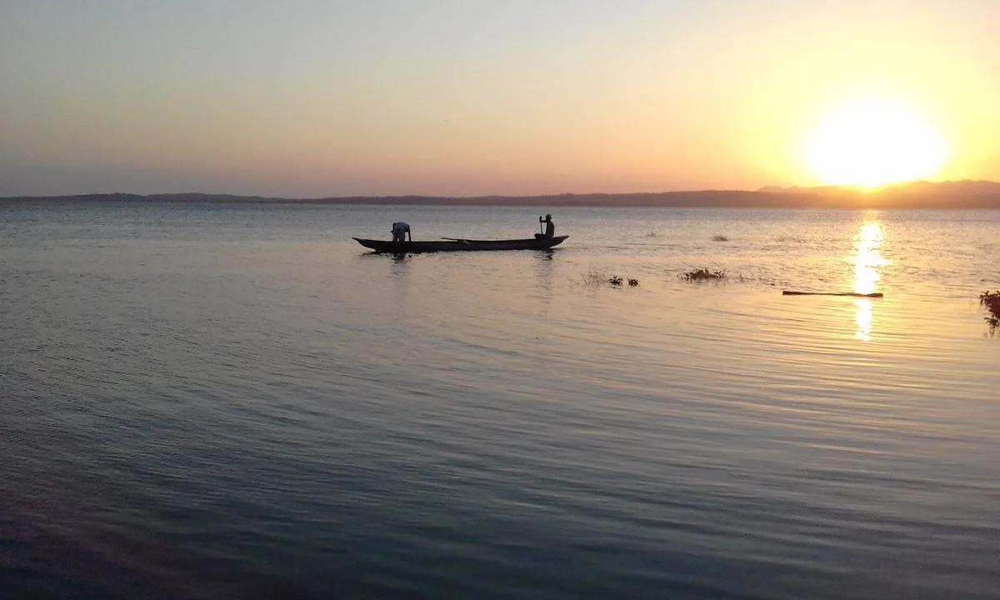

Relatos del Embalse del Guájaro
Lugares Misteriosos / Historia y tradición oral

Un espejo de agua lleno de recuerdos
En el sur del departamento del Atlántico se encuentra uno de los cuerpos de agua más importantes del Caribe colombiano: el Embalse del Guájaro, también conocido como Ciénaga del Guájaro. Rodeado por comunidades como La Peña, Aguada de Pablo, Rotinet y Villa Rosa, este territorio conserva una estrecha relación con la pesca, la agricultura y las tradiciones de sus habitantes. Sus aguas y extensas orillas forman parte de un paisaje que durante generaciones ha acompañado la vida de numerosas familias.
Antes de convertirse en el embalse que conocemos actualmente, este territorio estaba conformado por diferentes ciénagas naturales que se comunicaban mediante caños y conexiones de agua. Durante los años 1964 y 1965, el Instituto Colombiano de la Reforma Agraria (INCORA) impulsó la construcción del embalse, un proyecto que buscaba controlar las inundaciones, favorecer la agricultura y aprovechar los recursos hídricos de la región. Aquella transformación modificó profundamente el paisaje y la relación de las comunidades con el agua.
Para los pescadores de la región, el Guájaro representa mucho más que una reserva de agua. Es un espacio de trabajo, supervivencia y memoria familiar. Durante décadas, generaciones de habitantes han recorrido sus aguas en pequeñas embarcaciones, utilizando atarrayas y otros instrumentos tradicionales de pesca. Entre las conversaciones de pescadores y habitantes sobreviven recuerdos de antiguas faenas, lugares desaparecidos y cambios que han transformado la vida alrededor de la ciénaga.
Uno de los aspectos más llamativos de su historia está relacionado con las transformaciones del territorio. La unión de las antiguas ciénagas, la construcción de terraplenes y las modificaciones en los flujos naturales del agua cambiaron los ecosistemas y las actividades de las comunidades. Lo que antes era una extensa red de cuerpos de agua conectados pasó a convertirse en un sistema regulado mediante obras hidráulicas. Detrás de este proceso existen historias de adaptación, pérdida de espacios naturales y recuerdos de un paisaje que ya no existe de la misma manera.
El embalse también guarda recuerdos difíciles. Durante las inundaciones de 2010, relacionadas con la ruptura del Canal del Dique, varias comunidades cercanas sufrieron graves afectaciones. Pobladores de La Peña, Rotinet y Aguada de Pablo enfrentaron la entrada del agua a sus viviendas y terrenos. Muchas familias tuvieron que abandonar sus hogares, mientras el paisaje conocido durante años quedó transformado por la emergencia. Estos acontecimientos permanecen en la memoria de quienes vivieron aquella tragedia.
Al amanecer y durante las últimas horas de la tarde, el paisaje del Guájaro adquiere una apariencia particular. Las pequeñas embarcaciones, el movimiento de las aves, la vegetación y la inmensidad del agua crean escenarios que despiertan la imaginación. En las comunidades ribereñas también sobreviven relatos transmitidos entre familiares y vecinos, recuerdos de pescadores y narraciones relacionadas con la vida junto a la ciénaga. Cada historia aporta una pieza a la memoria colectiva de este territorio.
Los misterios del Guájaro no necesariamente se encuentran en fenómenos sobrenaturales. También están en sus antiguas conexiones de agua, en los territorios transformados, en las historias de quienes han vivido de la pesca y en los recuerdos que permanecen alrededor de sus orillas. Es un lugar donde la naturaleza y la memoria humana se encuentran, conservando relatos que merecen ser escuchados y preservados.
Territorios y comunidades alrededor del Guájaro
La Peña: corregimiento de Sabanalarga relacionado con la pesca artesanal y las historias de las comunidades que viven junto al embalse.
Aguada de Pablo: comunidad ribereña cuya historia está estrechamente vinculada con las aguas del Guájaro y las transformaciones del territorio.
Rotinet: corregimiento de Repelón que conserva una importante relación con la actividad pesquera y la memoria de las inundaciones.
Villa Rosa: corregimiento de Repelón, relacionado con las obras hidráulicas y las compuertas que regulan la entrada y salida del agua del embalse.
Manatí: municipio del sur del Atlántico cuya economía y tradición se relacionan con la pesca y el aprovechamiento de los recursos hídricos.
Fuentes y referencias
Corporación PBA. Embalse del Guájaro, una fuente en el Atlántico. Historia, actividad pesquera, agricultura y transformaciones del embalse.
Consultar fuenteAutoridad Nacional de Licencias Ambientales (ANLA). Ley 2175 de 2021. Declaración del Embalse del Guájaro como zona de interés ambiental, turístico, ecológico y pesquero.
Consultar leyEl Heraldo. (2015). El Guájaro, amenazado por sedimentación y basuras. Reportaje sobre la situación ambiental y los pescadores de la región.
Consultar reportajeCentro Nacional de Memoria Histórica. El Canal del Dique: memorias de las transformaciones del agua, los territorios y las comunidades del Caribe.
Consultar documento